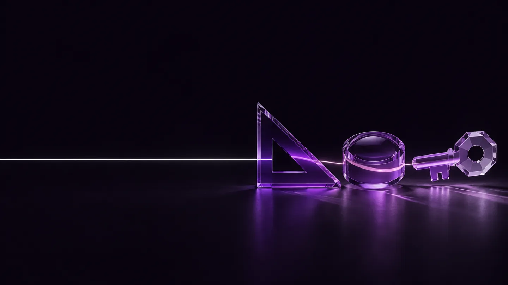

Claude skills
Claude skills we made ourselves and how they were made: each at its latest version.
Each skill folder in the archive is that skill's latest version. Version history lives in git history; every version stands as its own commit. Each skill's build document covers what changed version by version, the development method and the evaluation results. The raw build material (evaluation workspaces, Codex adaptations) is kept in the archive as well.
Features
award-grade-web
Designs and builds websites that sell the business first, using the craft techniques of award-winning sites: a new site or a redesign, one page or many. The owner chooses from two or three first screens; the defect check walks every page. It is used only when called by name or when Awwwards or award-level quality is explicitly asked for, never for ordinary website, landing page or interface requests.
roblox-luau-expert
Builds and reviews Roblox games in Luau through the Roblox Studio MCP: exploit-resistant server authority, a lifecycle without leaks, current 2026 APIs. It uses textured generated assets, measured quality targets, a static gate and Studio verification, and works collaboratively (asks before design decisions) or autonomously (decides, logs, queues irreversible actions). Not for non-Roblox Lua (LÖVE, Neovim, Defold).
deconstructing-references
Turns game and app references (a gameplay video, a screenshot, a live app, open-source code) into a measured, evidence-tagged implementation spec before any code is written. Not for general questions about how games work.
Facts
- award-grade-web: latest version v3.5 (2026-11-15)
- award-grade-web: calibration rests on the full jury breakdowns of 116 sites collected from Awwwards pages (51 elite, 65 ordinary SOTD)
- award-grade-web, in ten blind tests (23 briefs, 92 verdicts for skill-versus-plain-build pairs): overall 51/92, design 24/92, usability 72/92
- These numbers are one model's panel verdicts, not human preference
- award-grade-web v3.4 and v3.5 have not yet been used on a real job
- roblox-luau-expert: latest version v3.1 (2026-11-01)
- roblox-luau-expert: five versions in the archive, v2.0 to v3.1; the file count grew from 19 to 33
- deconstructing-references: latest version v2.1 (2026-11-01)
- deconstructing-references: the validator tests have 31 faulty (bad_*) and 3 good (good_*) example files in v2.1
- deconstructing-references: the example spec has 19 parameters: 14 observed, 2 inferred, 3 assumed
- deconstructing-references: no evaluation or test run has a recorded result
- Type
- Claude skills
- Technology
- Claude skill folders (for ~/.claude/skills and claude.ai)